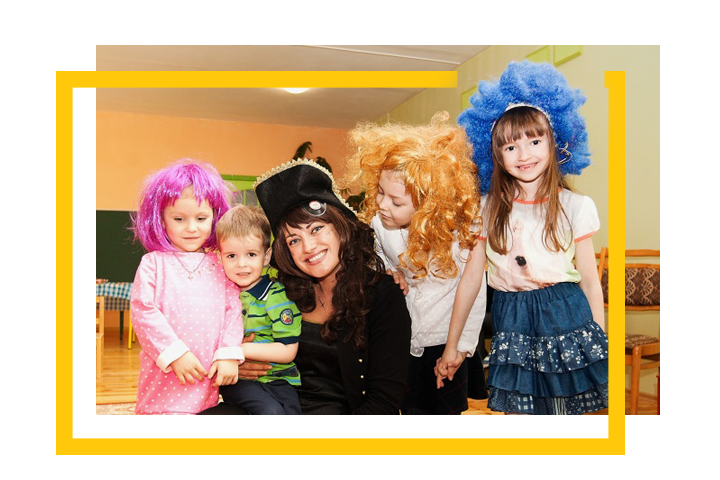
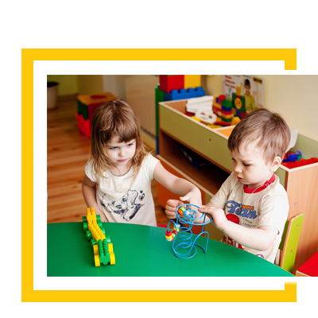
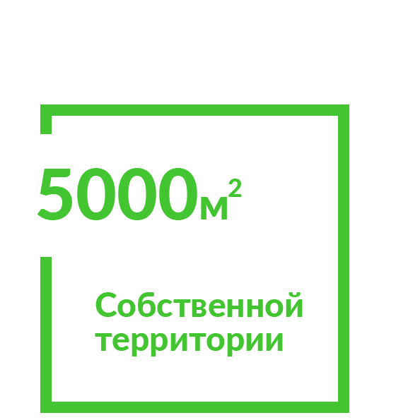

Наша миссия
Помочь родителям вырастить здоровых и образованных детей.
История и философия
История нашего детского сада уходит в 1995 год, когда на базе столичной гимназии мы открыли свои двери и приняли первых воспитанников. Прошло немало времени прежде, чем мы поняли, каким должен быть частный детский сад, и главное — создали такой сад. С 2002 года мы начали свой самостоятельный путь. В 2014 году открыли второй детский сад в пригороде Минска... В 2015 году по многочисленным просьбам родителей мы расширили свою деятельность: перед детьми распахнула двери начальная школа "Ребенок будущего". Мы постоянно в поиске— новых идей, подходов и приемов, способствующих достижению наивысшего результата. Мы приобретаем новое оборудование, обустраиваем территорию нашего учреждения. Самое важное для нас— обеспечить высокий уровень образования, сохранить здоровье детей, их стремление к познанию, умение самостоятельно мыслить.
Не глядя на все новомодные движения в альтернативном образовании: жоховскую методику, идеи гуманизма, дающие право на свободное посещение занятий в начальной школе и т. д, и т.п., мы остаёмся приверженцами той модели образования, которая прошла апробацию не на одном поколении школьников. И которой всегда отдавали предпочтение в элитарном обществе в (в том числе в царских семьях). Короче говоря, это: классическое образование у хороших педагогов плюс иностранные языки плюс качественное музыкальное, художественное и хореографическое образование.
Да, мы тоже идём в ногу со временем. И у нас тоже есть и шахматный клуб, и программирование. И если ребёнок по каким- то причинам не посещает школу – его обучают дистанционно, с помощью современной техники в интерактивном режиме. Мы тоже ежедневно держим родителей в курсе дел их детей: и видео высылаем с занятий, и фото. Мы за то, чтобы новое полезное помогало старому, проверенному временем, но никак не выступало вместо этого старого, надежного. Все новшества мы внедряем аккуратно, с осторожностью, потому что за годы существования нашего учреждения – а это более двадцати лет! – убедились в одном: система образования (в детском саду в том числе) должна быть стройной и выверенной. Чтобы давать прочный результат. И поэтому у нас никогда не будет среди основных предмета «математическое воображение», а всегда и только— «математика»!
Сегодня мы — Частное учреждение образования «Учебно-педагогический комплекс детский сад-начальная школа «Ребенок будущего». Принимаем детей от 2.5 до 6 лет в наши детские сады, от 6 до 9 лет в начальную школу.
Наши особенности
Без «чудес»
Процесс воспитания потому и назван процессом, что дело это не одного месяца и даже года. Оно требует кропотливой слаженной работы профессионального коллектива, знающего что и как надо делать с детьми, чтобы они стали думающими, образованными, культурными и здоровыми людьми.
Стабильный преподавательский состав
В младшей группе и в первой, и во второй половине дня работают два воспитателя, в старшей — два воспитателя в первой половине дня. Целый день в группах трудятся помощники воспитателя. Все педагоги нашего образовательного учреждения имеют высшее образование, различные педагогические категории. Занятия проводятся и в первой, и во второй половине дня, с учетом психофизических особенностей детей. Ежегодно весной проводятся Дни открытых дверей, где все педагоги демонстрируют свое мастерство и показывают, чему они научили детей.
Хорошее питание
5-разовое питание, по-домашнему приготовленное штатным поваром. При необходимости мы можем приготовить для вашего ребенка диетическое питание.
Оздоровление
Дневной сон в спальне с высокими потолками, на деревянных, отдельно стоящих кроватях из массива сосны. Физеопроцедуры (разные виды ингаляторов, современные лечебные лампы комплексного и специального действия, орошение слизистой, оздоровительный массаж), профилактика заболеваний,постоянное кварцевание, проветривание и ионизация, увлажнение воздуха в помещениях. Здоровье вашего ребенка у нас на первом месте.
Работаем летом
Причем летом у нас всегда очень насыщенная программа: это и интереснейшие авторские праздники, созданные творческим педагогическим коллективом, и активное погружение в языковую среду (английский лагерь), и занятия спортом и туризмом: катание на велосипедах, электромобилях, купание в бассейне, прыжки на батуте, походы в лес и на озеро. Ботанический сад, Детская железная дорога, музей авиатехники, музей архитектуры и быта Беларуси, линия Сталина – далеко не полный список наших путешествий.
Культурная жизнь
Мы — заядлые театралы, пользуемся тем, что в непосредственной близости от сада находятся несколько театров, ставящих детские спектакли, и Большой академический театр оперы и балета. Часто приглашаем к себе и частные студии, театральные агентства, клоунов и мини-цирки. В Белгосцирк выезжаем на каждую новую постановку. Любим посещать арт-выставки и бывать в зоопарке, проводить совместные праздники с участием детей, родителей и педагогов.
Развитие
Грамота и математика. Чтение и подготовка к письму по методике Н. Зайцева. Обучение в комнате Марии Монтессори. С 4-х лет обучаем детей шахматам. Кроме того, территория сада хорошо обустроена для игр и развлечений.
Музыка и хореография,театрально-игровая деятельность, изобразительная деятельность, художественное творчество: детский дизайн, бисероплетение, квилинг, тестопластика (технологии РТВ), физкультура и плавание под руководством тренера в бассейне.

Мы не даем обещаний, которые не можем выполнить!
Заезжайте в гости — убедитесь сами!
Галина Иосифовна Гринкевич
Директор и основатель
«Когда ставишь перед собой высокую планку, компромиссы в вопросах качества невозможны. Ребенок будущего полностью отражает моё представление об идеальном детском саде и начальной школе. Это продуманный досуг, уникальная локация, свежий воздух, качественное питание, авторские и популярные международные образовательные подходы, и конечно, педагоги самого высокого уровня»